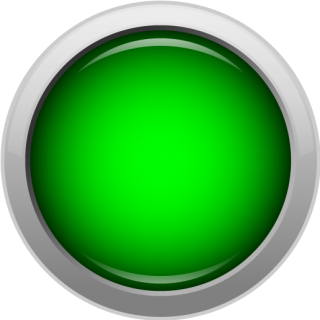

Links
Um link é uma referência a um recurso que o usuário pode acessar clicando ou tocando.
Um link é uma referência a um recurso que o usuário pode acessar clicando ou tocando.
Botões executam uma ação quando clicados, como enviar um formulário ou iniciar um download.
Permitem ao usuário selecionar uma ou mais opções de um conjunto.